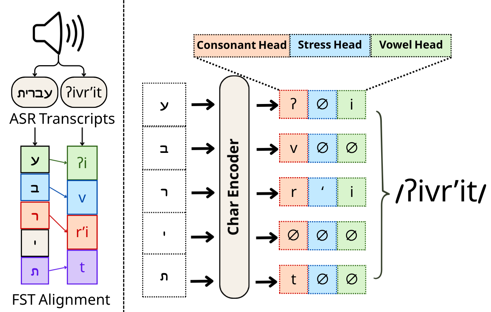
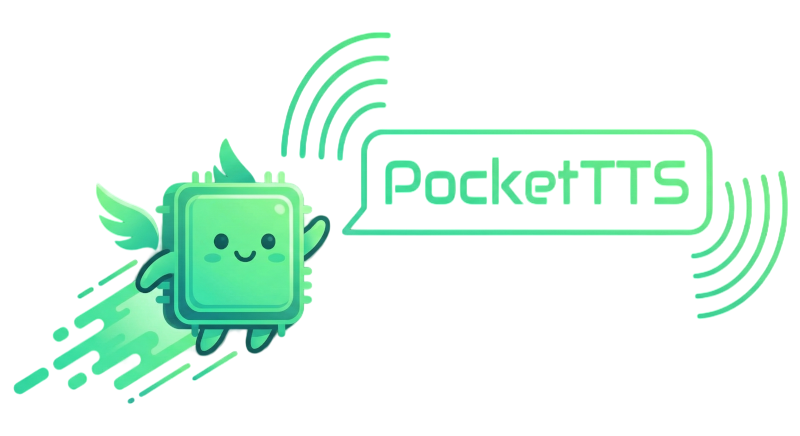

Demonstration of audio-supervised Hebrew G2P as a follow-up to Phonikud. Uses weak supervision from speech and ASR pseudo-labels to model spoken pronunciation.

Fast open-source TTS with ONNX Runtime inference supporting 5 languages including Hebrew. Features zero-shot voice cloning and emotion control, with Phonikud powering Hebrew G2P.
Streaming text-to-speech in a single self-contained ONNX file, with first audio in 80 ms on CPU and no torch. Runs from Python, TypeScript, or straight in the browser. The Hebrew LoRA supports IPA and nikud input, plus voice cloning from a few seconds of audio.

Demonstration of Hebrew Text-to-Speech using ChatterBox AI with Phonikud integration. Features multilingual zero-shot voice cloning and emotion control with performance that outperforms ElevenLabs.
Hebrew TTS with ZipVoice and Phonikud integration. Natural speech, accurate pronunciation, and zero-shot voice cloning with low-latency ONNX inference.
Fine-tuned from ivrit.ai Whisper Large v3 Turbo model for transcribing Hebrew speech into IPA phonetic representation. Trained on the ILSpeech dataset with ~90% accuracy, providing highly accurate Hebrew phonetic transcription for speech recognition applications.
Studio-quality Hebrew speech dataset with two male speakers. Includes clean text and phoneme annotations in LJSpeech format, phonemized using Phonikud.
Large-scale Hebrew speech dataset with single-speaker audio at 44.1kHz. Enhanced from OpenSLR with Hebrew diacritics and Phonikud-generated phonemes.
Training dataset used to create the first version of Phonikud. Contains clean Hebrew sentences with nikud and phonetic marks, with manual corrections for high-frequency words.
Visual presentation that explains the challenges of Hebrew writing system and how Phonikud solves the phonetic ambiguity problem. Demonstrates multiple pronunciations of the same Hebrew text.
Fast Text-to-Speech in Hebrew with Phonetic Control. Enter unvocalized Hebrew text to generate speech with control over text, diacritics, and phonemes.